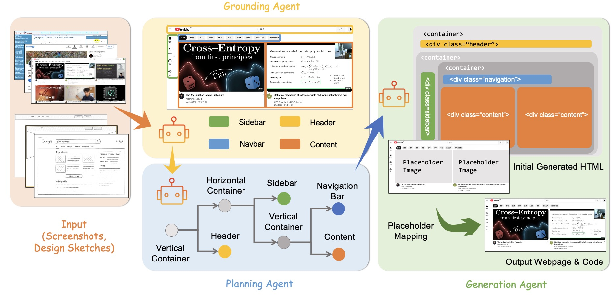
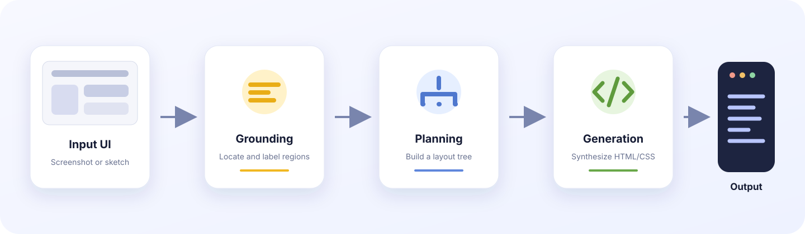
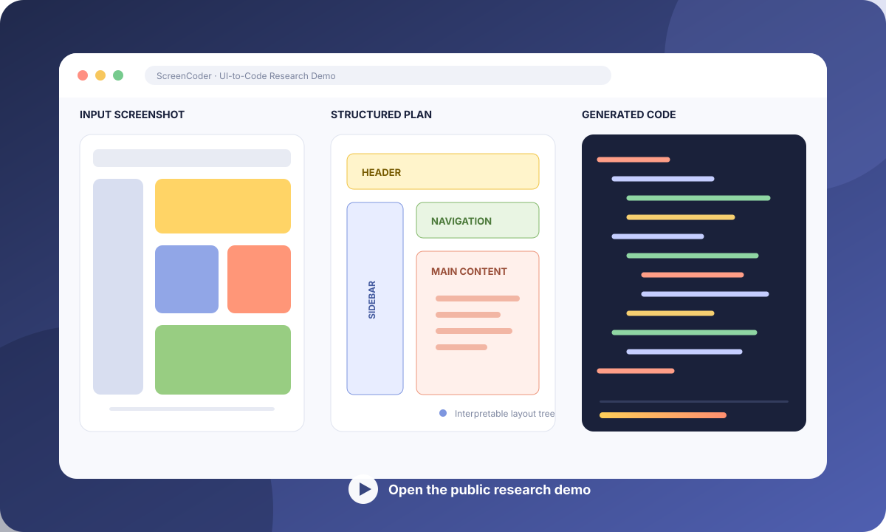
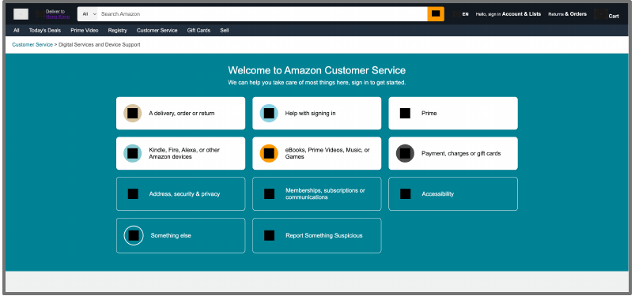
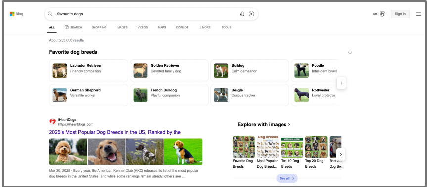
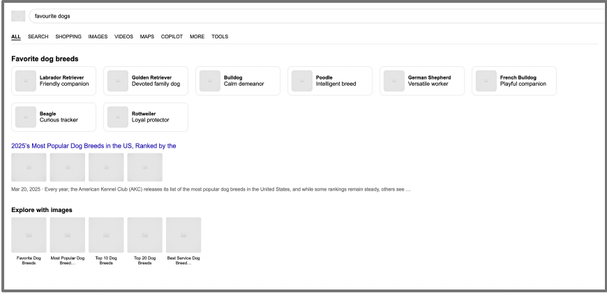
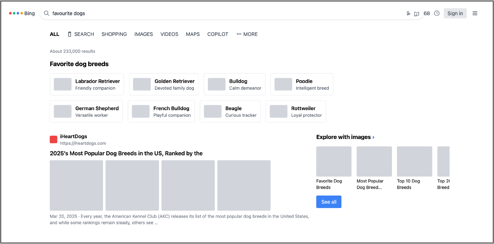
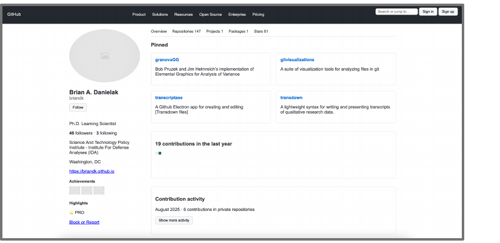
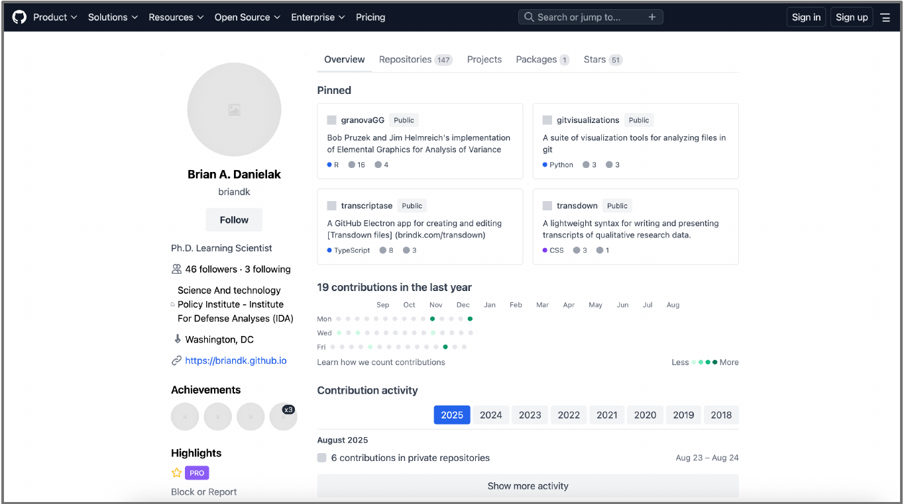

01
Perception Errors
Small elements are omitted, text or colors are distorted, and interface components are assigned the wrong semantic roles.
Research project · arXiv:2507.22827
A modular multi-agent framework that separates visual grounding, structural planning, and code generation to produce faithful and interpretable front-end implementations from UI screenshots and design sketches.
CUHK MMLab & ARISE Lab

Motivation
End-to-end multimodal models must perceive fine visual details, reason about nested layouts, and synthesize valid front-end code at once. ScreenCoder begins from two recurring failure modes observed in this monolithic setting.
01
Small elements are omitted, text or colors are distorted, and interface components are assigned the wrong semantic roles.
02
Correctly perceived elements are still misplaced or assembled into flat structures that do not reflect a coherent DOM hierarchy.
Method
ScreenCoder assigns perception, structural reasoning, and synthesis to specialized stages, then restores visual assets through explicit placeholder matching.
Locates and labels major UI regions such as headers, navigation, sidebars, and content, providing a semantic spatial map.
Converts grounded regions into a hierarchical, DOM-like layout tree using front-end engineering priors.
Generates executable HTML and CSS from the layout tree, semantic context, and optional design instructions.
Matches detected visual assets to generated placeholders and restores image patches with optimal assignment.

Interactive evidence
The public demo exposes the full screenshot-to-code workflow and supports examples ranging from familiar websites to rough design drafts. This project page stays static and links to the hosted system.

Public Hugging Face Space
Upload an interface image, review the generated layout and webpage, then download the resulting code package.
Open the DemoExperiments
The paper evaluates block, text, position, and color consistency alongside CLIP similarity. Values below are reproduced from arXiv v2 tables; the full paper remains the authoritative source.
| Model | ScreenBench | Design2Code | ||||||||
|---|---|---|---|---|---|---|---|---|---|---|
| Block | Text | Position | Color | CLIP | Block | Text | Position | Color | CLIP | |
| GPT-4o | 0.745 | 0.835 | 0.725 | 0.702 | 0.775 | 0.845 | 0.962 | 0.903 | 0.881 | 0.917 |
| ScreenCoder (Agentic) | 0.768 | 0.857 | 0.755 | 0.734 | 0.812 | 0.865 | 0.975 | 0.925 | 0.908 | 0.922 |
| ScreenCoder (Finetuned) | 0.758 | 0.841 | 0.742 | 0.718 | 0.791 | 0.849 | 0.968 | 0.913 | 0.886 | 0.915 |
Source note: arXiv v2 prose refers to 0.755 as a Block score, while Table 1 places 0.768 under Block and 0.755 under Position. This page preserves the table layout and does not promote either value as a standalone headline claim.
Qwen2.5-VL → SFT → RL
| Training stage | ScreenBench | Design2Code | ||||||||
|---|---|---|---|---|---|---|---|---|---|---|
| Block | Text | Position | Color | CLIP | Block | Text | Position | Color | CLIP | |
| Base model | 0.723 | 0.828 | 0.613 | 0.632 | 0.762 | 0.822 | 0.951 | 0.815 | 0.831 | 0.893 |
| + SFT | 0.741 | 0.835 | 0.705 | 0.681 | 0.784 | 0.842 | 0.963 | 0.890 | 0.870 | 0.908 |
| + RL (Final) | 0.758 | 0.841 | 0.742 | 0.718 | 0.791 | 0.849 | 0.968 | 0.913 | 0.886 | 0.915 |
Data engine
Beyond inference, ScreenCoder is used to curate clean image-code pairs and improve an open-source multimodal model through supervised fine-tuning and reinforcement learning.
A benchmark of 1,000 contemporary webpage screenshot and HTML pairs for evaluating modern UI-to-code systems.
View the public datasetQualitative analysis
The paper compares source screenshots, end-to-end baselines, and ScreenCoder outputs across diverse layouts. Public project assets populate this gallery in the visual implementation stage.
Case 01

Case 02



Case 03


Citation
@article{jiang2025screencoder,
title = {ScreenCoder: Advancing Visual-to-Code Generation for Front-End Automation via Modular Multimodal Agents},
author = {Jiang, Yilei and Zheng, Yaozhi and Wan, Yuxuan and Han, Jiaming and Wang, Qunzhong and Lyu, Michael R. and Yue, Xiangyu},
journal = {arXiv preprint arXiv:2507.22827},
year = {2025}
}ScreenCoder builds on open research including UIED, DCGen, and Design2Code. See the paper and repository for complete references and acknowledgements.